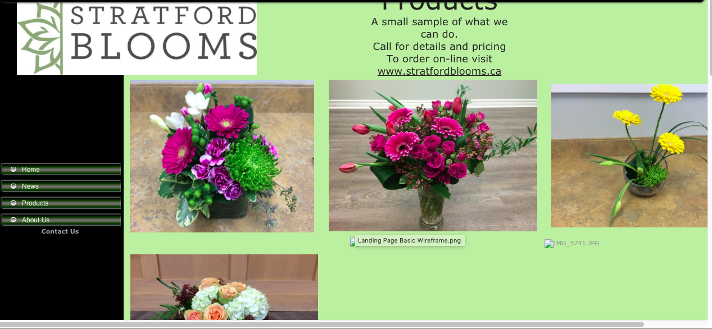
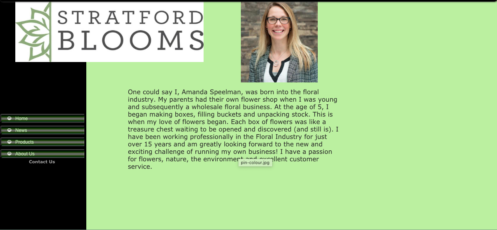
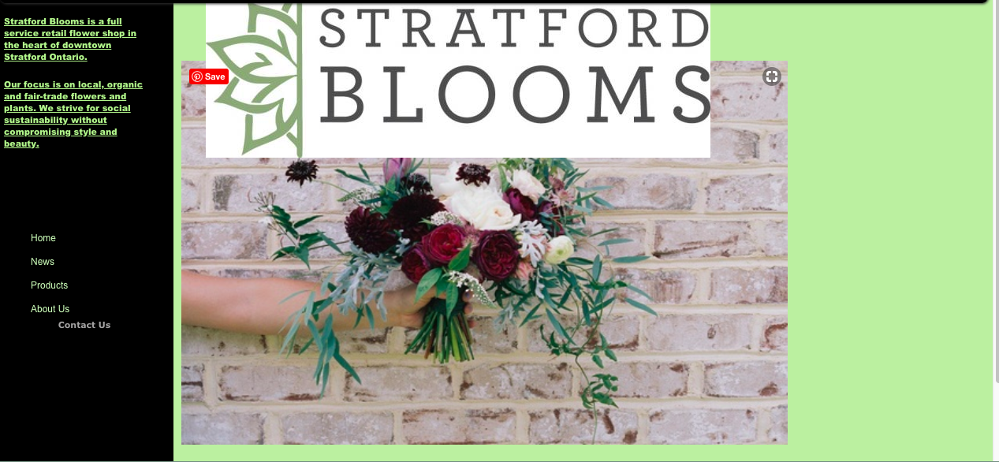
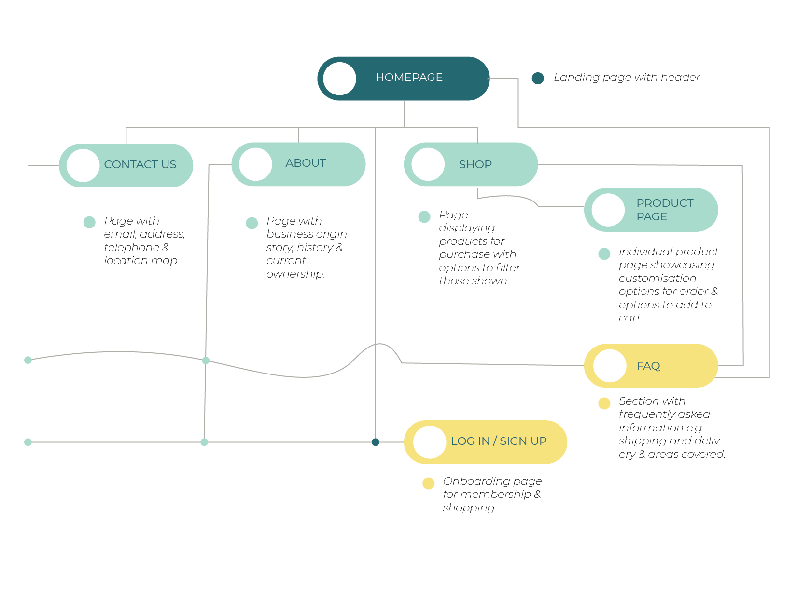
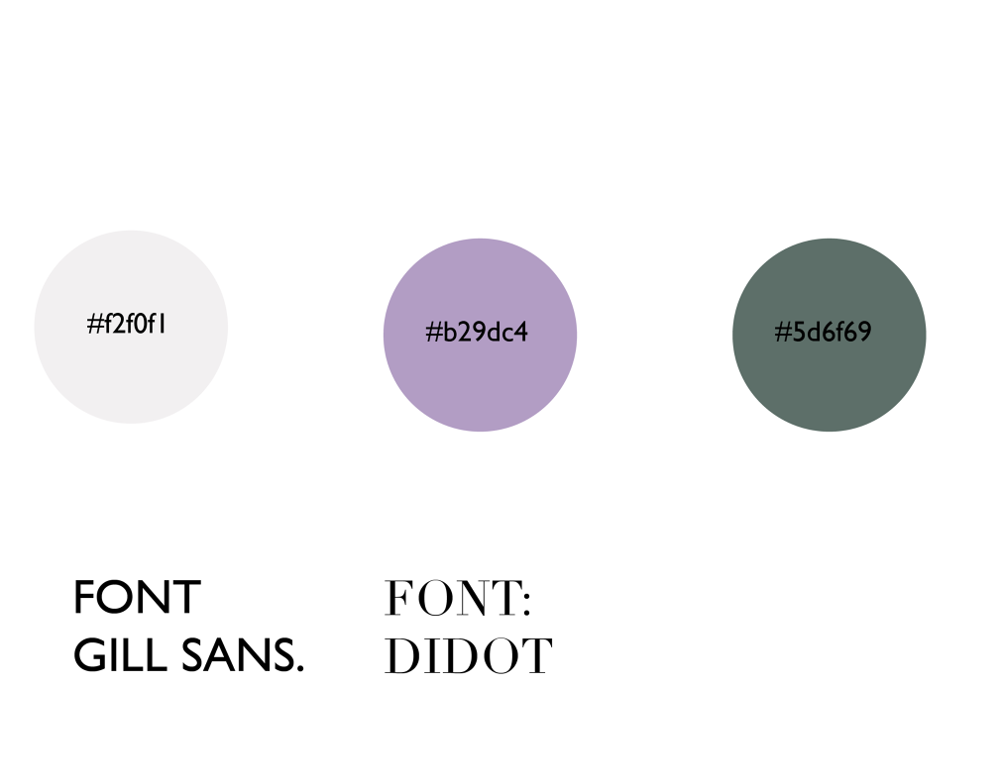

startfordlooms.
Stratford Blooms flower shop website redesign
Course | GBDA 228
Role | Front-End Developer, UI Designer
Duration | September - December 2019
Tools | Illustrator, Figma, Visual Code
Overview
Background
Stratford Blooms is a local flower shop based in Stratford Ontario, they are loved by the locals and are the go-to flower shop for many occasions
Project
Our term school project for GBDA 228, an HTML and CSS course, tasked us to re-design a local business’ website incorporating the business’ values, style, theme and show what the business has to offer, beyond their products.
Challenge: Redesign a local business’ website or create a website for a local business if they've yet to create an online shop.
Research
Previous content
Their previous website had little to no information about their business with regards to their product and service that they offer. Although the main links are presented, such links are: incomplete, unaccessible as it's currently under construction or lacking information needed. In addition to that, there are many overlapping images and contents making the overall website not as visually-appealing.
Previous design
These are example images of Stratford Bloom's previous website desing.



Ideation
Reformation & Wealth Simple
Reformation is a sustainable online clothing brand and store. They are known for their high quality clothing as well as their ethical and sustainable practices in making their items. My team and I personally liked how they are bold with thier photos; minimal words, more emphasis on their clothing thus bigger sized images to show their product. A Canadian online investment management service focused on millennials. Not only do they provide smart and simple investing, but their website also shows their simplicity and minimalist style that we also gravitated to.
Ideation
My team and I then proceeded to sketch out the UIs of the website after getting to know the business and the family who began the flower shop. Below are low-fidelity sketches of the website and a rough outline of the system. We wanted to maintain key elements and assets that the local business already had as they are established and known by their logo and certain colors.
This is a more percised illustration of our site map of the website redesign:

After getting a better idea of how we want the website to look, we began creating wireframes to use as a guide for our high-fidelity mock-ups:
Results
In our final redesign, we wanted to maintain key elements and assets that the local business already had already made as they have been established and are known by their logo and certain colors.
Landing page is simple, straight to the point & aesthetically pleasing.
We referenced the "snake-like" pattern of how the images were set up in Wealthsimple's website which creates a long scroll down, and less clicking around. The landing page now has its featured products, simple and short texts accompnaying each but most importantly showcases Stratford Blooms' beautiful products.
One-stop-shop with filters to make your shopping easy.
Clearly shows the products available, and mnay other categories to choose from, a simple scroll to see more products and fairly sized images to clearly see what arrangements the business features.
Filters galore.
We referenced Reformation's way of filtering due to its easy "hover-click" action and space between each catergories. It does not fill the entire box of filters and it is easy to read and pick and choose from.
Look at those angles!
Once you choose a product to view or purchase, it takes you to the product itself to view the product at a better angle, read more information about such arrangments and add or filter out any additional gifts to be purchased with the flowers.

This is Stratford Blooms!
The About Page is easy to read, understand and you get to learn about the beautiful mother-daughter-duo who started their business through their passion and appreciation of nature's beauty

A membership for the flower arrangements as everyday is an occasion!
When the Login or Signup page is clicked, a pop-up will show on the current Page you are in so that you can easily login or create an account without losing your spot browsing such prodcuts.
Visual design
Final thoughts
Designing
After reviewing each team members design thoroughly, we concluded that it would be best to take certain elements from each design. Overall from the mockups we discovered some keys changes that needed to be addressed in the redesign: Navigation, Content and Aesthetics. The product page was an area that lacked the most, ultimately there was a consensus that there needed to be a filter system to improve the usability of the page and a grid layout for the overall design.
Aesthetically we decided to go with a more neutral palette of pastels and earth tones that was featured in one of group members designs, along with the style of buttons, and finishings that she had used. Another common thread in each of our designs was a slideshow on the homepage featuring a welcome from the company, their slogan and information about sales and events, therefore we carried that into our final design and choose the fonts and images collectively.
We came to the consensus that the website needed to be modern and minimal with a relative colour palette to the nature of the business, but also one that did not detract from the vibrancy of the products. We fixed the existing navigation issues through the use of a navigation bar that carried through each page and in page links to more information. Finally we addressed the content issues by adding the missing information and expanding on that which was originally provided, and through the use of a footer the most pertinent information is always easily accessible to the customers.